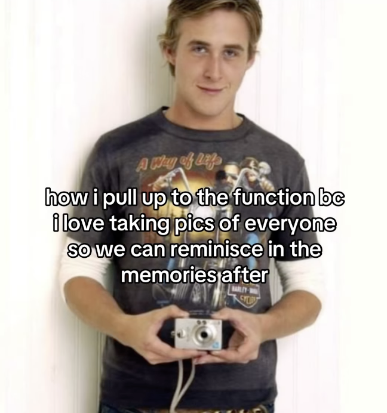
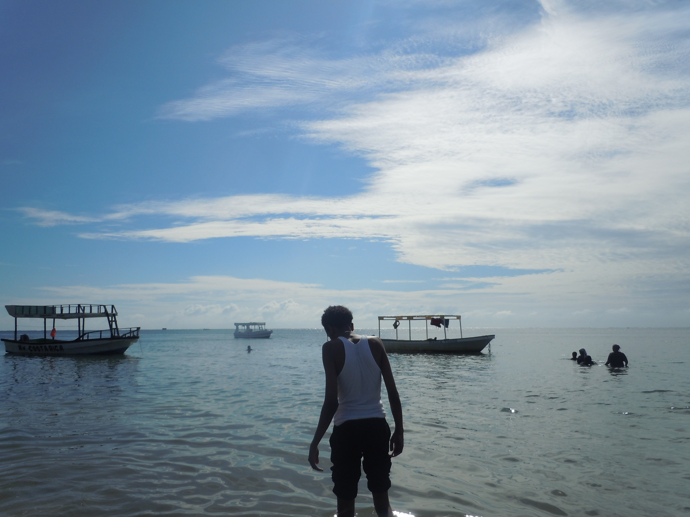
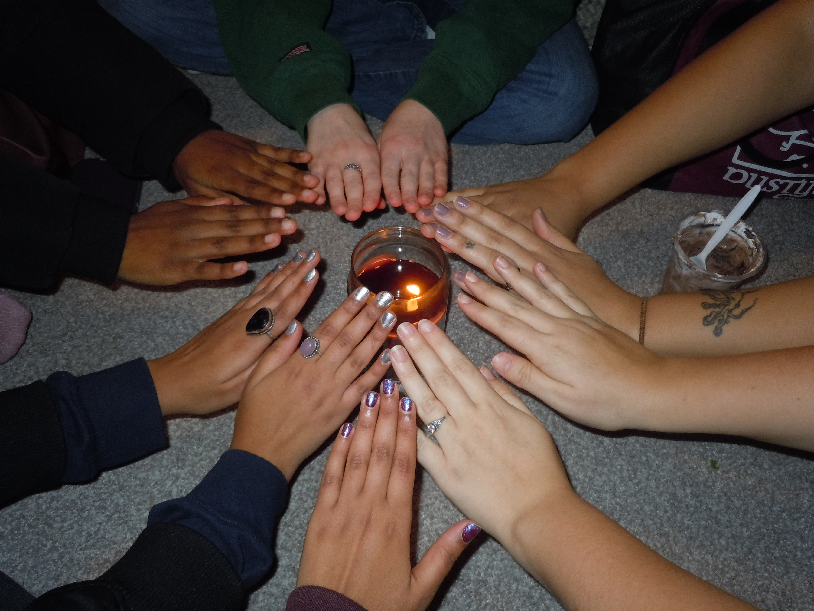

Hi!! My name's Kareema, and I love taking photos! I am a freshman at MSU and majoring in Games and Interactive Media. I'm for sure a person who picks up and drops hobbies all the time. I love trying new things, and I try my best to consume as much as my brain can take. One of my first of many hobbies was taking photos. I had gotten a Kodak PIXPRO FZ43 camera for my 10th birthday party. I still use it a lot today, and it is what really got me into taking photos. Taking photos is just a small hobby for me; I'm definitely not as into it as some people I have met. I do it more for memories! I have a giant photo album that I keep the pictures I take there. My mom has one from when she was my age, and it inspired me to start one too!
So I got a camera when I was around ten. I used to take it with me during family events, trips, and even school sometimes. I really just took pictures of what I thought looked cool and pretty. There was a point where my family moved, I misplaced my camera, and forgot about it. I had a lot of gaps where I lost it and forgot all about it. It wasn't until the beginning of high school that I picked it up again. I started taking it with me everywhere, and once I started working, I bought an importer so I could finally have the photos I took on my phone. As time went on, I got into this rabbit hole of buying used/broken cameras. I would buy them off eBay or at estate sales! Some of them even came with SD cards that the previous owners used. I would be so mad if I forgot my SD card in my camera while selling it. I also have a camcorder that I fixed, but I barely use it unless I make a mini vlog. I currently have 3 cameras, and SD cards with 1k+ photos on almost each!!
I am one of those annoyingly nostalgic people. I love taking pictures with my friends and family when we hang out. As I said, I started a photo album, and now it's mostly of all the cool people and things I've been doing at college. It's just to reminisce when I'm older and show people how cool I am (kidding sorta). I also really enjoy taking photos of nature. I think that the world is sooo beautiful, and it's one of my favorite things to capture. If anyone asks me to hang out or literally anything, I'll have one of my cameras in my bag. Recently, I started making mini vlogs with my friends. I've made 3 so far, and they're all a minute or two long. I have a winter break one, one from the start of freshman year, and one of just clips I collected over time. If anyone wants to see them #contactme.
Vids (ignore the butt quality)!! Wait here's 2 of them if you want to watch...I couldn't find my super long fun one! Bummer it's my favorite one, but hey if you follow me you've seen it!

me as hell
I have a second Instagram account that I use as my mini digital diary. It is private, though, because it has lots of family pictures, and the internet is scary....but it's @karm2ax. I also post most of my faceless photos on Pinterest (also @karm2ax), but I don't update as consistently as I do with my Instagram. I also post on TikTok, but also barely...
My Pinterest: https://www.pinterest.com/karm7ax/
Kodak PIZPRO | Canon Powershot S2 IS | Nikon Coolpix S6000Most of these I got on Ebay or Estate Sales!

. ݁₊ ⊹ . ݁˖ . ݁. ݁₊ ⊹ . ݁˖ . ݁. ݁₊ ⊹ . ݁˖ . ݁. ݁₊ ⊹ . ݁˖ . ݁. ݁₊ ⊹ . ݁˖ . ݁. ݁₊ ⊹ . ݁˖ . ݁. ݁₊ ⊹ . ݁˖ . ݁₊ ⊹ . ݁˖ . ݁. ݁₊ ⊹ . ݁˖ . ݁. ݁₊ ⊹ . ݁˖ . ݁. ݁₊ ⊹ . ݁˖ . ݁. ݁₊ ⊹ . ݁˖ . ݁. ݁₊ ⊹ . ݁˖ . ݁. ݁₊ ⊹ . ݁˖ . ݁₊ ⊹ . ݁˖ . ݁. ݁₊ ⊹ . ݁˖ . ݁. ݁₊ ⊹ . ݁˖ . ݁. ݁₊ ⊹ . ݁˖ . ݁. ݁₊ ⊹ . ݁˖ . ݁. ݁₊ ⊹ . ݁˖ . ݁. ݁₊ ⊹ . ݁˖ . ݁

. ݁₊ ⊹ . ݁˖ . ݁. ݁₊ ⊹ . ݁˖ . ݁. ݁₊ ⊹ . ݁˖ . ݁. ݁₊ ⊹ . ݁˖ . ݁. ݁₊ ⊹ . ݁˖ . ݁. ݁₊ ⊹ . ݁˖ . ݁. ݁₊ ⊹ . ݁˖ . ݁₊ ⊹ . ݁˖ . ݁. ݁₊ ⊹ . ݁˖ . ݁. ݁₊ ⊹ . ݁˖ . ݁. ݁₊ ⊹ . ݁˖ . ݁. ݁₊ ⊹ . ݁˖ . ݁. ݁₊ ⊹ . ݁˖ . ݁. ݁₊ ⊹ . ݁˖ . ݁₊ ⊹ . ݁˖ . ݁. ݁₊ ⊹ . ݁˖ . ݁. ݁₊ ⊹ . ݁˖ . ݁. ݁₊ ⊹ . ݁˖ . ݁. ݁₊ ⊹ . ݁˖ . ݁. ݁₊ ⊹ . ݁˖ . ݁. ݁₊ ⊹ . ݁˖ . ݁

. ݁₊ ⊹ . ݁˖ . ݁. ݁₊ ⊹ . ݁˖ . ݁. ݁₊ ⊹ . ݁˖ . ݁. ݁₊ ⊹ . ݁˖ . ݁. ݁₊ ⊹ . ݁˖ . ݁. ݁₊ ⊹ . ݁˖ . ݁. ݁₊ ⊹ . ݁˖ . ݁₊ ⊹ . ݁˖ . ݁. ݁₊ ⊹ . ݁˖ . ݁. ݁₊ ⊹ . ݁˖ . ݁. ݁₊ ⊹ . ݁˖ . ݁. ݁₊ ⊹ . ݁˖ . ݁. ݁₊ ⊹ . ݁˖ . ݁. ݁₊ ⊹ . ݁˖ . ݁₊ ⊹ . ݁˖ . ݁. ݁₊ ⊹ . ݁˖ . ݁. ݁₊ ⊹ . ݁˖ . ݁. ݁₊ ⊹ . ݁˖ . ݁. ݁₊ ⊹ . ݁˖ . ݁. ݁₊ ⊹ . ݁˖ . ݁. ݁₊ ⊹ . ݁˖ . ݁

. ݁₊ ⊹ . ݁˖ . ݁. ݁₊ ⊹ . ݁˖ . ݁. ݁₊ ⊹ . ݁˖ . ݁. ݁₊ ⊹ . ݁˖ . ݁. ݁₊ ⊹ . ݁˖ . ݁. ݁₊ ⊹ . ݁˖ . ݁. ݁₊ ⊹ . ݁˖ . ݁₊ ⊹ . ݁˖ . ݁. ݁₊ ⊹ . ݁˖ . ݁. ݁₊ ⊹ . ݁˖ . ݁. ݁₊ ⊹ . ݁˖ . ݁. ݁₊ ⊹ . ݁˖ . ݁. ݁₊ ⊹ . ݁˖ . ݁. ݁₊ ⊹ . ݁˖ . ݁₊ ⊹ . ݁˖ . ݁. ݁₊ ⊹ . ݁˖ . ݁. ݁₊ ⊹ . ݁˖ . ݁. ݁₊ ⊹ . ݁˖ . ݁. ݁₊ ⊹ . ݁˖ . ݁. ݁₊ ⊹ . ݁˖ . ݁. ݁₊ ⊹ . ݁˖ . ݁